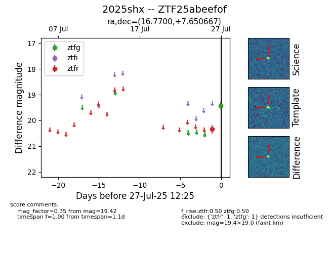

Target 2025shx at 2025-07-27 12:25, see:
FINK: fink-portal.org/2025shx
Lasair: lasair-ztf.lsst.ac.uk/objects/2025shx
ALeRCE: alerce.online/object/2025shx
TNS: wis-tns.org/object/2025shx
YSE: ziggy.ucolick.org/yse/transient_detail/2025shx
alt names
ZTF25abeefof (ztf,fink)
2025shx (tns,yse)
coordinates:
equatorial (ra, dec) = (16.7700,+7.65067)
galactic (l, b) = (129.7021,-55.01533)
photometry
last ztfg=19.42, ztfr=20.34
1 ztfg, 1 ztfr detections
